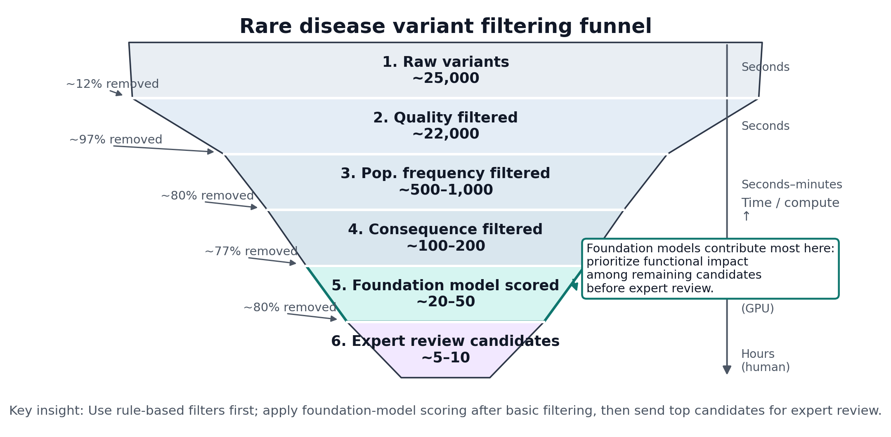
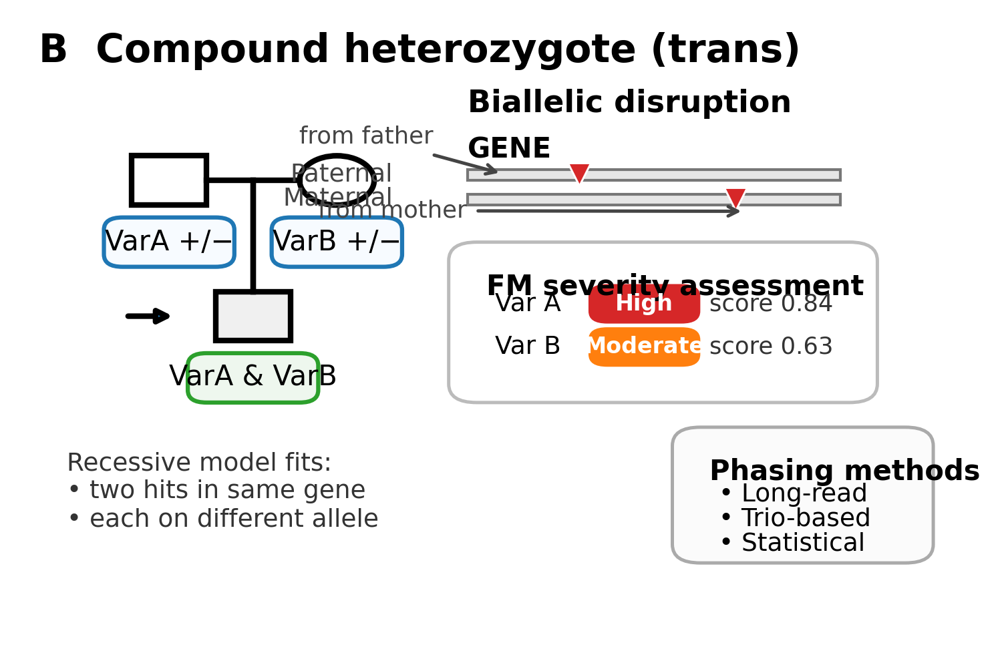
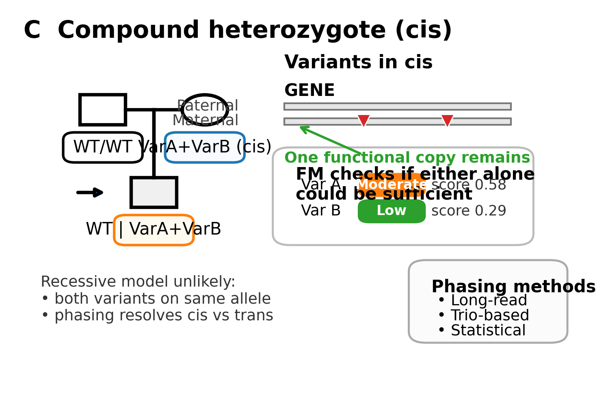
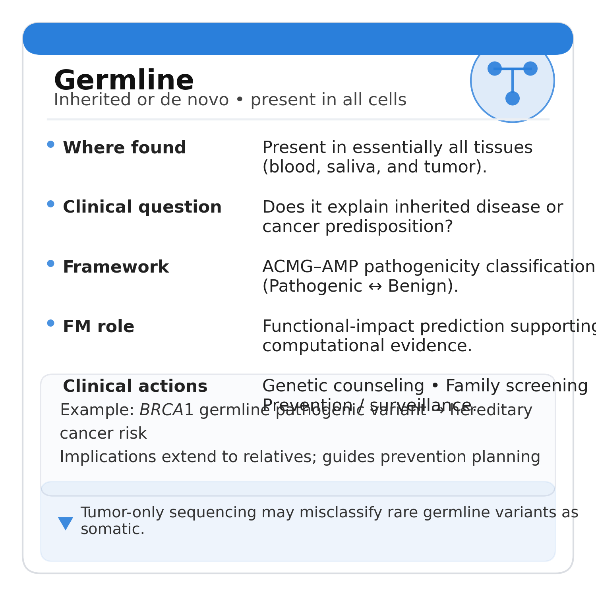
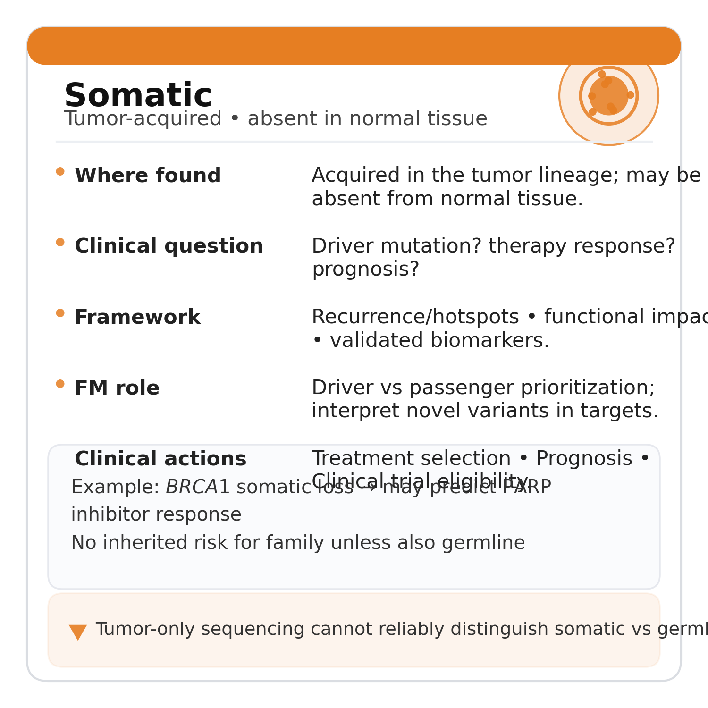
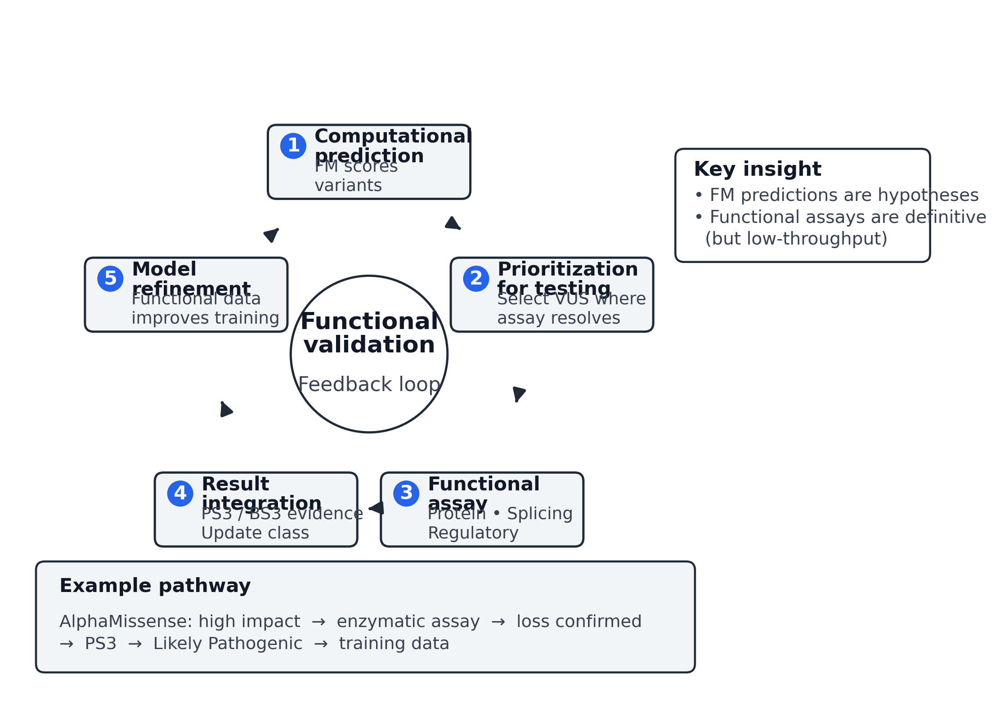
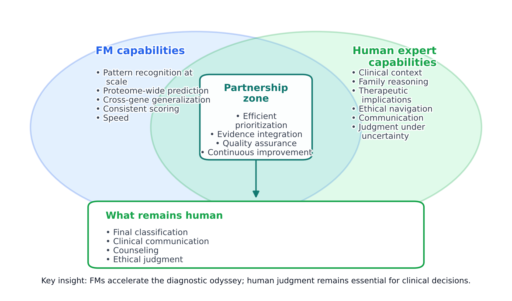

28 Rare Disease Diagnosis
A four-year-old presents with developmental delay, hypotonia, and seizures that began at eighteen months. Standard metabolic testing reveals nothing. A gene panel for epilepsy returns negative. The neurologist orders whole-exome sequencing, which identifies 23,847 single nucleotide variants and 1,203 small insertions or deletions compared to the reference genome. Somewhere in this list of approximately 25,000 variants may lie the molecular explanation for this child’s condition. The clinical team must reduce this number to a handful of candidates for expert review, ideally to a single variant or gene that explains the phenotype and guides management. This is the diagnostic odyssey: the gap between sequencing a genome and understanding what it means for a patient.
This scenario plays out thousands of times daily across clinical laboratories worldwide. Rare diseases collectively affect approximately 300 million people globally, yet individual conditions range from tens of thousands of patients to fewer than a dozen known cases worldwide (Nguengang Wakap et al. 2020). Over 7,000 rare diseases have been characterized, the majority following Mendelian inheritance patterns where single genes exert large effects (Amberger et al. 2015). For these patients, identifying the causal variant can end years of uncertainty, enable accurate genetic counseling for families, and increasingly guide targeted therapies. The technical capacity to sequence genomes has advanced enormously; the interpretive bottleneck has not kept pace. Variant interpretation remains largely manual, relying on clinical geneticists and laboratory directors who cannot scale to meet demand.
Foundation models offer new tools for this interpretive challenge. As detailed in Chapter 17, models like AlphaMissense provide proteome-wide estimates of missense pathogenicity, while regulatory models like Enformer predict variant effects on gene expression across tissues. These computational predictions become one line of evidence within structured interpretation frameworks. Foundation model outputs integrate into clinical variant interpretation workflows: from initial prioritization that reduces 25,000 variants to dozens, through ACMG-AMP evidence classification that structures expert review, to family-based analysis that leverages inheritance patterns, and laboratory validation that confirms computational predictions. The goal is not prediction for its own sake but actionable clinical insight: which variant explains this patient’s disease, and what should we do about it?
28.1 Variant Prioritization Funnel
Clinical variant interpretation operates through progressive filtering, narrowing tens of thousands of candidates to a manageable set for expert review. Each filtering step applies different types of evidence, and foundation models contribute at multiple stages.

28.1.1 Quality and Technical Filters
The first filter removes variants that are likely technical artifacts rather than true biological variation. Sequencing depth below 20x, strand bias exceeding established thresholds, and clustering of variants in repetitive regions all raise suspicion of false positives. Variant calling pipelines like GATK and DeepVariant (see Section 1.8) produce quality scores that guide this initial triage. As discussed in Section 23.2, these confidence estimates require careful calibration; systematic miscalibration in specific genomic contexts propagates directly into interpretation, creating blind spots where uncertain calls masquerade as confident ones or vice versa. Variants failing quality thresholds are removed before any biological interpretation begins.
For trio analysis (proband plus both parents), Mendelian inheritance consistency provides an additional quality check. A variant called heterozygous in the child should appear in at least one parent unless it arose de novo. Widespread Mendelian inconsistencies indicate sample swaps, contamination, or systematic calling errors that must be resolved before interpretation proceeds.
28.1.2 Population Frequency Filters
Variants common in the general population are unlikely to cause rare, severe disease. If a variant appears in 1% of gnomAD individuals, it cannot plausibly explain a condition affecting one in 100,000 people under a dominant model. Frequency thresholds depend on inheritance mode and disease prevalence: dominant conditions with complete penetrance require extremely rare variants (often absent from population databases), while recessive conditions can tolerate higher carrier frequencies.
The Genome Aggregation Database (gnomAD) provides allele frequencies across over 800,000 individuals from diverse ancestries (see Section 2.2.3) (Karczewski et al. 2020). Applying a frequency threshold of 0.01% for dominant conditions and 1% for recessive carriers typically removes 95% or more of variants from consideration. Ancestry-matched frequencies matter: a variant rare in European populations may be common in African or East Asian populations, and global frequency alone can be misleading.
28.1.3 Consequence and Gene Filters
Predicted functional consequence shapes prioritization. Loss-of-function variants (frameshift, nonsense, canonical splice site) in genes intolerant to haploinsufficiency receive immediate attention. Missense variants require additional assessment, as most are benign. Intronic and intergenic variants have historically been deprioritized, though foundation models are beginning to identify functional noncoding variants with greater precision (see Section 16.2 for regulatory models and ?sec-ch14-enformer-vep for variant effect prediction in noncoding regions).
Gene-level filters incorporate prior knowledge. Curated gene panels for specific phenotypes (such as the PanelApp epilepsy panel or cardiomyopathy panel) restrict analysis to genes with established disease associations. For undiagnosed cases without clear phenotype match, broader approaches may include all OMIM disease genes or genes with high constraint (low observed/expected loss-of-function ratios in gnomAD).
28.1.4 Foundation Model Scoring
After quality, frequency, and consequence filters, foundation model predictions provide quantitative effect estimates for remaining candidates. For missense variants, AlphaMissense scores offer genome-wide pathogenicity estimates derived from protein structure and evolutionary conservation (Cheng et al. 2023). For splice-region variants, SpliceAI predictions quantify the probability and magnitude of splicing disruption (Jaganathan et al. 2019). For regulatory variants, Enformer and related models estimate effects on chromatin accessibility and gene expression in relevant tissues (Section 16.2; ?sec-ch14-enformer-vep) (Avsec et al. 2021).
These scores do not directly translate to pathogenicity classifications. A high AlphaMissense score indicates that the protein change is likely functionally disruptive, not that it causes a specific disease. The clinical relevance of any functional disruption depends on the gene’s role in the patient’s phenotype, the inheritance pattern, and whether disruption of that gene produces the observed clinical features. Foundation model scores become one input to a structured evidence framework, not a standalone answer.
28.2 ACMG-AMP Criteria and Computational Evidence
The American College of Medical Genetics and Genomics and Association for Molecular Pathology (ACMG-AMP) framework provides the dominant structure for clinical variant classification (Richards et al. 2015). Published in 2015 and subsequently refined through ClinGen expert panels, this framework assigns variants to five categories: pathogenic, likely pathogenic, variant of uncertain significance (VUS), likely benign, and benign. Classification emerges from combining multiple evidence types, each assigned a strength level (very strong, strong, moderate, supporting) and direction (pathogenic or benign).

28.2.1 Evidence Categories
ACMG-AMP evidence spans several domains. Population data includes allele frequency in controls (BA1, BS1, BS2 for benign; PM2 for pathogenic support when absent). Computational predictions include in silico tools predicting deleterious effects (PP3 for pathogenic support) or benign effects (BP4 for benign support). Functional data includes well-established functional assays demonstrating deleterious (PS3) or no (BS3) effect. Segregation data addresses co-segregation with disease in multiple affected family members (PP1) or lack of segregation (BS4). De novo status assigns strong (PS2) or moderate (PM6) evidence when parental samples are available and the variant is absent in both parents. Clinical information incorporates specific phenotype match (PP4) and prevalence considerations.
The framework combines these evidence types through defined rules. Pathogenic classification requires either one very strong criterion plus one strong, or two strong criteria, with additional supporting evidence. Likely pathogenic requires somewhat less evidence. Most variants end up as VUS because available evidence is insufficient for confident classification in either direction.
28.2.2 PP3 and BP4: Computational Evidence
Computational predictions enter the ACMG-AMP framework primarily through PP3 (pathogenic supporting evidence from computational predictions) and BP4 (benign supporting evidence). These criteria apply when multiple in silico tools agree that a variant is deleterious (PP3) or benign (BP4).
The original 2015 guidelines assigned these criteria only “supporting” strength, reflecting appropriate caution about computational predictions available at the time. Tools like SIFT, PolyPhen-2, and CADD had limited accuracy and concerning circularity issues (Section 4.5). The evaluation challenges these tools face, including benchmark contamination and label leakage, are examined in ?sec-ch22-label-circularity. ClinGen sequence variant interpretation working groups have subsequently refined how computational evidence is weighted, in some cases upgrading to moderate strength for well-calibrated predictors in specific genes.
Foundation models raise new questions about computational evidence strength. AlphaMissense achieves substantially higher accuracy than traditional tools on held-out ClinVar variants and deep mutational scanning data. Should predictions from these models receive greater evidentiary weight? The answer is not straightforward. Higher accuracy on aggregate benchmarks does not guarantee reliability for any individual prediction. Gene-specific calibration matters: a model may perform well across all genes but poorly for genes with unusual structure or function. And the fundamental limitation remains that computational predictions estimate functional impact, not clinical pathogenicity.
Responsible application of foundation model predictions in ACMG-AMP classification requires gene-specific and variant-type-specific calibration whenever possible, explicit acknowledgment that PP3/BP4 evidence is supporting unless upgraded by expert panel guidance, use of multiple orthogonal predictors rather than reliance on any single model, and clear documentation of which tools were applied and how predictions were interpreted.
28.2.3 Calibrating Predictions to Evidence Strength
The calibration problem is central to using foundation model predictions clinically. A model outputs a continuous score; clinical classification requires discrete evidence categories. How should thresholds be set, and what strength should be assigned?
The ClinGen Sequence Variant Interpretation Recommendations address this through the concept of odds of pathogenicity (Tavtigian et al. 2018). Supporting evidence corresponds to an odds ratio of approximately 2 (twice as likely pathogenic as benign given this evidence). Moderate evidence corresponds to odds of approximately 4, and strong evidence to odds of approximately 18. For a computational predictor to warrant upgrading from supporting to moderate strength, its predictions should demonstrably achieve odds ratios meeting these thresholds in relevant validation datasets.
For AlphaMissense and similar foundation models, published validation shows that the highest-scoring variants (above 0.9) achieve odds ratios exceeding the strong evidence threshold in some gene contexts (Pejaver et al. 2022; Bergquist et al. 2025). The calibration methods underlying these threshold determinations, including isotonic regression and Platt scaling, are detailed in Section 23.3; their application to ACMG evidence mapping is discussed in ?sec-ch14-acmg-mapping. ClinGen expert panels have begun incorporating these calibrations for specific genes, allowing upgraded evidence strength when predictions meet defined criteria. Clinicians should follow gene-specific expert panel recommendations when available rather than applying uniform thresholds across all genes.
28.3 Family-Based Analysis
Rare disease interpretation rarely relies on proband sequence alone. Family structure provides substantial additional information through inheritance pattern constraints, de novo status determination, and segregation analysis.



28.3.1 De Novo Variants
De novo variants arise newly in the proband and are absent in both parents. For severe, early-onset dominant conditions, de novo mutations are expected: affected individuals rarely reproduce, so the disease-causing allele must arise fresh each generation. Observing a damaging variant as de novo provides strong evidence for pathogenicity under ACMG-AMP (PS2), often sufficient to push a candidate toward likely pathogenic or pathogenic classification.
The informativeness of de novo status depends on the mutation rate at that site and the expected de novo rate for the variant class. The human germline mutation rate is approximately 1 to 1.5 new mutations per 100 million base pairs per generation (Kong et al. 2012). For protein-coding exons (approximately 30 million base pairs), each individual carries roughly one new coding variant on average. Finding a damaging de novo variant in a candidate gene is therefore much more suspicious than finding an inherited variant of similar predicted effect.
Foundation models assist de novo interpretation by providing effect estimates that help prioritize among multiple de novo variants (typical trio sequencing identifies one to three de novo coding variants) and by identifying de novo variants in noncoding regions that might disrupt critical regulatory elements. A de novo variant in a brain-specific enhancer upstream of a known epilepsy gene, predicted by Enformer to substantially reduce gene expression (Section 16.2.1), warrants investigation even though traditional pipelines might overlook noncoding de novo events.
28.3.2 Compound Heterozygosity and Phasing
Recessive diseases require biallelic disruption: both copies of the gene must be affected for disease to manifest. When a proband carries two different heterozygous variants in the same gene, the critical question is whether these variants are in trans (on opposite chromosomes, leading to biallelic disruption) or in cis (on the same chromosome, leaving one copy functional).
Phasing determines which configuration applies (Section 1.4.1 for clinical stakes; Section 1.4.3 for methodological details). Several approaches are available. Physical phasing through long-read sequencing directly observes which variants occur on the same DNA molecule, providing definitive phase information when reads span both variant positions. Trio phasing infers phase from parental genotypes: if one variant is inherited from the mother and one from the father, they must be in trans. Statistical phasing uses population haplotype patterns to estimate phase, though accuracy decreases for rare variants not well-represented in reference panels.
For clinical interpretation, trio phasing is often the most practical approach. If both variants are confirmed in trans and both are predicted damaging, this supports pathogenicity under a recessive model. If both variants were inherited from a single parent (in cis), the gene cannot explain a recessive phenotype unless a third variant exists.
Foundation models contribute by estimating the functional severity of each variant. A missense variant with marginal AlphaMissense score might not warrant attention alone, but paired in trans with a clear loss-of-function variant, the compound heterozygous combination could produce sufficient functional disruption to cause disease.
28.3.3 Segregation Analysis
In larger families with multiple affected and unaffected individuals, segregation analysis examines whether candidate variants track with disease status. Under a dominant model, all affected individuals should carry the variant, and penetrance assumptions constrain how many unaffected carriers are expected. Under a recessive model, affected individuals should be homozygous or compound heterozygous, carriers should be heterozygous, and unaffected non-carriers should lack the variant entirely.
Strong segregation evidence (PP1, upgradable to strong evidence with sufficient meioses) can substantially support pathogenicity classification. Equally important, failure to segregate provides benign evidence (BS4): a variant present in unaffected family members at rates inconsistent with the proposed inheritance model is unlikely to be causal.
Segregation analysis requires accurate pedigree information, confirmed sample identities, and careful consideration of age-dependent penetrance and phenocopies. A variant might be present in an unaffected young relative who will develop disease later, or an affected relative might have a different etiology (phenocopy). These complexities require clinical judgment that no computational model can replace.
28.4 Somatic Variant Interpretation in Cancer
Cancer genomics presents distinct interpretive challenges. Tumor genomes accumulate mutations throughout malignant evolution, creating a mix of driver mutations (those conferring selective advantage and contributing to cancer development) and passenger mutations (bystanders with no functional consequence). The interpretive task shifts from identifying variants causing inherited disease to identifying variants driving tumor biology and predicting therapeutic response.


28.4.1 Germline versus Somatic Distinction
Cancer sequencing must distinguish germline variants (present in all cells, inherited or de novo) from somatic variants (acquired in the tumor lineage). Tumor-only sequencing cannot make this distinction reliably, as rare germline variants may be mistaken for somatic events. Paired tumor-normal sequencing, comparing tumor to a non-malignant sample from the same patient, enables confident somatic variant identification.
This distinction has direct clinical implications. A germline pathogenic variant in BRCA1 indicates hereditary cancer predisposition affecting the patient and potentially their family members, warranting genetic counseling and possibly risk-reducing interventions. A somatic BRCA1 mutation arose in the tumor and has no implications for inherited risk, though it may still predict response to PARP inhibitors.
28.4.2 Driver Classification
Among somatic mutations, identifying drivers requires different evidence than germline pathogenicity assessment. Recurrence across independent tumors suggests selective advantage: if BRAF V600E appears in 50% of melanomas, this frequency far exceeds what chance would predict, implying functional importance. Databases like COSMIC catalog somatic mutation frequencies across cancer types, enabling recurrence-based prioritization (Tate et al. 2019).
Functional impact predictions from foundation models apply somewhat differently in the somatic context. A missense variant predicted highly damaging by AlphaMissense in a tumor suppressor gene suggests loss of function consistent with a driver role. The same prediction in an oncogene might indicate loss of normal regulation, potentially activating rather than inactivating the protein. Interpretation must consider the gene’s role (oncogene versus tumor suppressor) and the specific functional consequence of the variant.
Tumor mutational burden provides context for individual variant interpretation. Hypermutated tumors (from mismatch repair deficiency or POLE mutations) may carry thousands of coding mutations, making it difficult to identify drivers against this noisy background. In such cases, restricting attention to known hotspots, truncating mutations in tumor suppressors, and variants with strong functional predictions helps prioritize the likely relevant events.
28.4.3 Therapeutic Biomarkers
Somatic variant interpretation increasingly focuses on therapeutic implications. Specific variants predict response to targeted therapies: EGFR exon 19 deletions and L858R mutations predict erlotinib response in lung cancer; BRAF V600E predicts vemurafenib response in melanoma; PIK3CA mutations indicate alpelisib benefit in breast cancer (Lynch et al. 2004; Chapman et al. 2011; André et al. 2019). These associations derive from clinical trials demonstrating differential response by mutation status.
Foundation models do not directly predict therapeutic response, as they lack the clinical outcome data that would be required. Their contribution is in characterizing novel variants in known therapeutic target genes. A patient whose tumor carries an unusual EGFR mutation not previously characterized might be evaluated using structural models and effect predictions to estimate whether the mutation likely preserves the drug-binding site and confers similar dependency as canonical sensitizing mutations. Such analyses are hypothesis-generating rather than definitive but can inform clinical decision-making when direct trial evidence is unavailable.
28.5 Laboratory Validation
Computational predictions, however accurate, remain predictions. Functional assays provide direct experimental evidence of variant effects, and ACMG-AMP appropriately weights functional data (PS3 for damaging functional effect, BS3 for no functional effect) as strong evidence when assays are well-validated.

28.5.1 Types of Functional Assays
Different variant types require different assay approaches. For missense variants, protein function assays measure specific biochemical activities of the mutant protein: enzyme activity, DNA binding, protein-protein interactions, or cellular phenotypes in model systems. Deep mutational scanning systematically characterizes all possible amino acid substitutions at each position in a protein, creating comprehensive functional maps (Section 2.4.4 for data resources; ?sec-ch14-integration-strategies for how foundation models leverage this data). These maps enable immediate lookup of functional effects for any observed missense variant, though coverage remains incomplete across the proteome.
For splicing variants, minigene assays clone genomic regions containing the variant into expression vectors and measure splicing patterns in cultured cells. RNA sequencing from patient tissue (when accessible) directly observes whether aberrant splicing occurs in vivo. SpliceAI predictions can be validated by these direct measurements, establishing whether computational predictions match experimental reality for specific variants.
For regulatory variants, reporter assays measure whether variant-containing regulatory elements drive appropriate expression patterns. Massively parallel reporter assays (MPRAs) enable testing thousands of variants simultaneously, generating the training data that informs foundation model development while also providing direct validation for specific variants of clinical interest. CRISPR-based approaches can introduce variants into endogenous genomic contexts rather than artificial reporter constructs, providing more physiologically relevant readouts.
28.5.2 Integrating Functional Evidence
Functional data enters ACMG-AMP classification through PS3 (strong pathogenic evidence from functional studies showing deleterious effect) and BS3 (strong benign evidence from functional studies showing no effect) (Brnich et al. 2019). The strength assignment depends on assay validation: well-established assays measuring physiologically relevant endpoints warrant strong evidence, while novel or less-validated assays may warrant only moderate or supporting strength.
ClinGen has developed detailed recommendations for functional evidence evaluation. The specific gene and disease mechanism should guide assay selection. Controls (known pathogenic and known benign variants) should be included to validate assay performance. The biological relevance of the assay endpoint to the disease mechanism must be justified. These requirements reflect appropriate caution: not all functional assays are equally informative, and inappropriate assays can mislead classification.
Foundation model predictions can prioritize which variants most warrant functional follow-up. When resources limit testing to a subset of VUS, selecting those with discordant computational predictions (high predicted impact but uncertain clinical classification) maximizes the information gained. Variants where functional testing might resolve classification provide greater value than variants where classification is already clear or unlikely to change regardless of functional results.
28.5.3 Closing the VUS Loop
The accumulation of variants of uncertain significance represents a major challenge in clinical genetics. Patients receive results that cannot be interpreted, creating anxiety and uncertainty. As more individuals undergo sequencing, VUS prevalence grows. Systematic efforts to resolve VUS through functional characterization could dramatically improve the clinical utility of genetic testing.
High-throughput functional approaches offer a path forward. Saturation genome editing applies CRISPR to introduce every possible single-nucleotide variant at clinically important loci, then measures functional consequences through cellular phenotypes or growth selection (Findlay et al. 2018). These experiments generate comprehensive functional maps that can immediately classify any observed variant. The Brotman Baty Institute’s ongoing efforts for BRCA1, mismatch repair genes, and other clinically important loci exemplify this approach.
Foundation models trained on these functional datasets can generalize beyond directly measured variants, predicting effects for positions or genes not yet characterized experimentally. This creates a productive cycle: functional data improves model training, improved models identify high-priority variants for follow-up, and targeted experiments fill gaps while further improving models.
28.6 Practical Workflow Integration
Translating foundation model capabilities into clinical practice requires integration with existing laboratory and clinical workflows. The technical and interpretive steps must fit within established regulatory frameworks, electronic health record systems, and clinical team structures.
28.6.1 Laboratory Workflow
Clinical sequencing laboratories operate under regulatory oversight (CLIA certification, state licensure, and potentially CAP accreditation in the United States). Validated pipelines must produce consistent, reproducible results. Introducing new computational tools requires formal validation demonstrating that the tool performs as expected on representative sample types, that outputs are interpretable and actionable by clinical staff, and that results are documented and traceable.
For foundation model integration, validation studies should assess performance on variants with known clinical classifications, compare predictions to existing tools to understand concordance and discordance, evaluate performance across variant types (missense, splice, regulatory) and gene categories, and document threshold selection and evidence strength assignment.
Laboratory information management systems must capture foundation model predictions alongside other variant annotations. Reports to clinicians should clearly indicate the role of computational evidence, the specific tools applied, and the evidence strength assigned. Overreliance on computational predictions, or failure to communicate their limitations, risks inappropriate clinical decisions.
28.6.2 Clinical Decision-Making
Variant interpretation reports ultimately inform clinical decisions: whether to pursue additional testing, what genetic counseling to provide, whether to adjust medical management, and what surveillance or prevention strategies to recommend. These decisions rest with clinicians and genetic counselors working with patients, not with computational algorithms.
Foundation model predictions support this process by improving the efficiency and accuracy of variant prioritization, reducing the number of VUS through more informative computational evidence, identifying potentially actionable variants in previously overlooked genomic regions, and enabling rapid assessment of novel variants not previously observed.
The interpretive report should convey both what computational predictions indicate and the uncertainty that remains. Clinicians must understand that even highly accurate models make errors, that predictions may be less reliable for underrepresented populations or unusual variant types, and that computational evidence is one component of a comprehensive assessment. Shared decision-making with patients should acknowledge these limitations while conveying the best current understanding.
28.6.3 Regulatory and Ethical Considerations
Clinical use of foundation model predictions raises regulatory questions addressed more fully in Section 26.1. In the United States, laboratory-developed tests using computational predictions fall under CLIA oversight, with additional FDA jurisdiction increasingly asserted for software as a medical device. European regulations under IVDR impose their own requirements. Laboratories must navigate this evolving landscape while ensuring that clinical utility keeps pace with regulatory compliance.
Equity concerns deserve particular attention. Foundation models trained predominantly on data from individuals of European ancestry may perform less well for other populations (?sec-ch22-ancestry-confounding for detailed discussion of ancestry-related performance disparities; Section 26.5.2 for equity implications). If computational predictions systematically provide less informative evidence for underrepresented groups, this could widen existing disparities in diagnostic yield and clinical care. Ongoing efforts to diversify training data and evaluate performance across ancestries are essential for equitable clinical deployment.
28.7 Interpretive Partnership
Foundation models transform variant interpretation by providing more accurate, comprehensive, and fine-grained predictions than previous computational approaches. Missense pathogenicity can be estimated proteome-wide with unprecedented accuracy. Regulatory variant effects can be predicted across tissues and cell types. Splicing disruption can be quantified with clinical-grade precision. These capabilities accelerate the diagnostic odyssey, enabling faster and more confident resolution for patients who have often waited years for answers.
Yet foundation models do not replace human judgment in clinical genetics. They do not understand phenotypes, family structures, or therapeutic implications. They do not weigh the psychological impact of uncertain results or navigate the ethical complexities of predictive testing in unaffected relatives. They provide evidence that must be integrated within clinical frameworks designed around human decision-making, alongside family history, physical examination, prior testing, and the accumulated wisdom of clinical experience.

The productive framing positions foundation models as partners in interpretation: computational systems that handle pattern recognition at scales beyond human capacity, freeing clinical experts to focus on integration, communication, and the decisions where human judgment remains essential. This partnership model, rather than replacement or autonomy, defines the path forward for genomic foundation models in rare disease diagnosis.